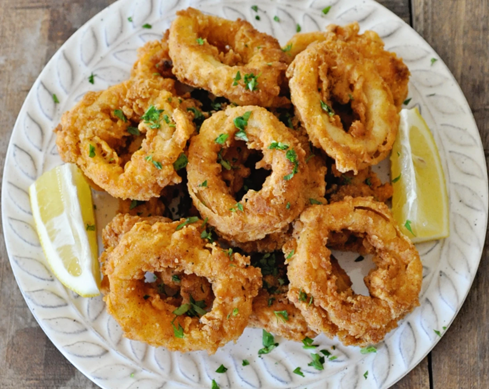

✖
MARY'S CRISPY FRIED CALAMARES RINGS

Ingredients :
- 500 grams (1lb) squid tube (calamares) cleaned
- 3/4 cup all purpose flour
- 1/4 cup cornstarch
- 1/2 tsp paprika
- 1/2 tsp garlic powder
- 1/2 tsp salt
- 1/4 tsp black pepper
- 1 egg, beaten
- 1/2 cup cold soda water
- Vegetables oil for frying
Equipments :
- Mixing bowl
- Knife and chopping board
- Frying pan or deep fryer
- Slotted spoon
- Paper towels
Methods :
- Prepare squids :
Slice squids tube into 1cm (1/2 inch) rings. Pat dry with paper towels
- Make Batter :
In a bowl,mix flour, cornstarch, paprika, garlic powder, salt and pepper.
- Heat oil :
Heat oil in deep fryer or heavy pan to 180 degree C (350 degree F).
- Fry :
Dip calamari rings into batter, allowing excess to drip off. Fry in small batches for 1 1/2 2 minutes until golden and crispy. Do not overcook, calamaresturns rubbery if fried too long.
- Drain and Serve :
Place on paper towels to drain. Serve immediately with lemon wedges and your choice of dipping sauces.